10 Transformations of random variables
On completion of this chapter, you should be able to:
- derive the distribution of a transformed variable, given the distribution of the original variable, using the distribution function method, the change of variable method, and the moment generating function method as appropriate.
- find the joint distribution of two transformed variables in a bivariate situation.
10.1 Introduction
In this chapter, we consider the distribution of a random variable \(Y = u(X)\), given a random variable \(X\) with known distribution, and a function \(u(\cdot)\). Among several available techniques, three are considered:
- the change of variable method (Sect. 10.2);
- the distribution function method (Sect. 10.3);
- the moment generating function method (Sect. 10.4).
An important concept in this context is a one-to-one transformation.
Definition 10.1 (One-to-one transformation) Let \(Y = u(X)\), where the function \(u(\cdot)\) is defined on the range \(\mathcal{R}_X\) of the random variable \(X\). The transformation \(u(\cdot)\) is called a one-to-one transformation (or one-to-one mapping) on \(\mathcal{R}_X\) if distinct values of \(x\in\mathcal{R}_X\) produce distinct values of \(y\); that is, \[ u(x_1) = u(x_2)\implies x_1=x_2. \]
Equivalently, each \(y\in\mathcal{R}_Y\) corresponds to exactly one \(x\in\mathcal{R}_X\). We also write 1:1 transformation or 1:1 mapping.
When \(Y = u(X)\) is a one-to-one transformation on \(\mathcal{R}_X\), the inverse function \(u^{-1}\) is uniquely defined on \(\mathcal{R}_Y = u(\mathcal{R}_X)\). Hence, \(X = u^{-1}(Y)\).
More generally, when \(u(\cdot)\) is not one-to-one, multiple \(x\)-values may map to the same \(y\)-value. The pre-image of \(y\) is the set of all values of \(x\) such that \(u(x) = y\): \[ u^{-1}(y) = \{x : u(x) = y\}. \]
When \(Y = u(X)\) is a one-to-one transformation over \(\mathcal{R}_X\), the inverse function is uniquely defined over \(\mathcal{R}_Y\); that is, \(X\) can be written uniquely in terms of \(Y\).
Example 10.1 The transformation \(Y = (X - 1)^2\) is not a one-to-one transformation in general. For example, the inverse transformation is \(X = 1 \pm \sqrt{Y}\), and two values of \(X\) exist for any given value of \(Y > 0\) (Fig. 10.1, left panel).
However, if the random variable \(X\) was only defined for \(\mathcal{R}_X = \{x\mid x > 2\}\) for example, then the transformation is a one-to-one function (Fig. 10.1, centre panel), and \(X = 1 + \sqrt{Y}\). If instead the random variable \(X\) was only defined for \(\mathcal{R}_X = \{x\mid x < 1\}\) for example, then the transformation is a one-to-one function (Fig. 10.1, right panel), and \(X = 1 - \sqrt{Y}\).
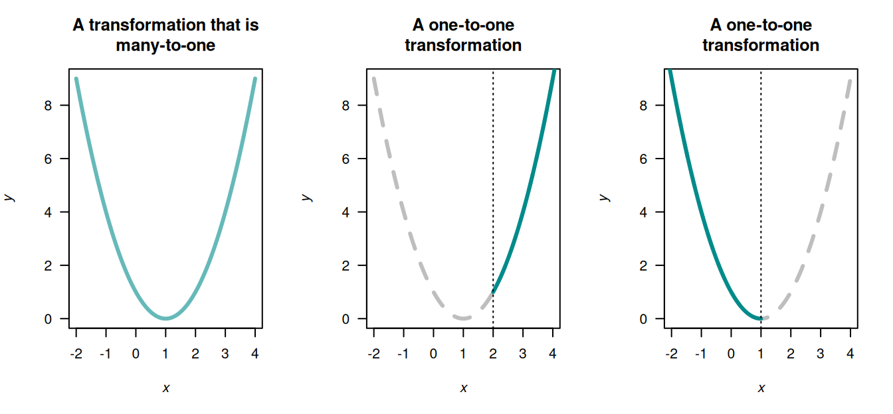
FIGURE 10.1: Three transformations: a non-one-to-one transformation (left panel), and two one-to-one transformations (centre and right panels).
10.2 The change of variable method
The method is relatively straightforward for one-to-one transformations, but considerable care is needed if the transformation is many-to-one (or, many-to-one); examples are given below. The discrete and continuous cases are considered separately.
The functions that are produced should be valid probability functions; check that this is the case.
10.2.1 Discrete random variables
Let \(X\) be a discrete random variable with probability function \(p_X(x)\), and let \(\mathcal{R}_X\) denote the set of discrete points for which \(p_X(x) > 0\). Let \(Y = u(X)\) define a one-to-one transformation that maps \(\mathcal{R}_X\) onto \(\mathcal{R}_Y\), the set of discrete points for which the transformed variable \(Y\) has a non-zero probability. If we solve \(Y = u(X)\) for \(X\) in terms of \(Y\), say \(X = w(Y) = u^{-1}(Y)\), then for each \(y \in \mathcal{R}_Y\), we have \(x = w(y)\in \mathcal{R}_X\).
Example 10.2 (Change of variable method: one discrete rv) Suppose \[ p_X(x) = \begin{cases} x/15 & \text{for $x = 1, 2, 3, 4, 5$};\\ 0 & \text{elsewhere}. \end{cases} \] To find the probability function of \(Y\) where \(Y = 2X + 1\) (i.e., \(u(x) = 2x + 1\)), first see that \(\mathcal{R}_X = \{1, 2, 3, 4, 5\}\). Hence \(\mathcal{R}_Y = \{3, 5, 7, 9, 11\}\) and the mapping \(y = 2x + 1 = u(x)\) is one-to-one. Also, \(w(y) = u^{-1}(y) = (y - 1)/2\). Hence, \[ \Pr(Y = y) = \Pr(2X + 1 = y) = \Pr\left(X = \frac{y - 1}{2}\right) = \left(\frac{y - 1}{2}\right) \times\frac{1}{15} = \frac{y - 1}{30}. \] So the probability function of \(Y\) is \[ \Pr(Y = y) = \begin{cases} (y - 1)/30 & \text{for $y = 3, 5, 7, 9, 11$};\\ 0 & \text{elsewhere}. \end{cases} \] (Note: The probabilities in this probability function add to \(1\).)
The above procedure when \(Y = u(X)\) is a one-to-one mapping can be stated generally as \[\begin{align*} \Pr(Y = y) &= \Pr\big(u(X) = y\big)\\ &= \Pr\big(X = u^{-1} (y)\big)\\ &= p_X\big(u^{-1}(y)\big), \quad\text{for $y\in \mathcal{R}_Y$}. \end{align*}\]
Example 10.3 (Transformation (1:1)) Let \(X\) have a binomial distribution with probability function \[ p_X(x) = \begin{cases} \binom{3}{x}0.2^x (0.8)^{3 - x} & \text{for $x = 0, 1, 2, 3$};\\ 0 & \text{otherwise}. \end{cases} \] To find the probability function of \(Y = X^2\), first note that \(Y = X^2\) is not a one-to-one transformation in general, but is one-to-one over the range of \(X\) (i.e., for \(x = 0, 1, 2, 3\)).
The transformation \(y = u(x) = x^2\), \(\mathcal{R}_X = \{x = 0, 1, 2, 3 \}\) maps onto \(\mathcal{R}_Y = \{y = 0, 1, 4, 9\}\). The inverse function is \(x = w(y) = \sqrt{y}\), and hence the probability function of \(Y\) is \[ p_Y(y) = p_X(\sqrt{y}\,) = \begin{cases} \binom{3}{\sqrt{y}}0.2^{\sqrt{y}} (0.8)^{3 - \sqrt{y}} & \text{for $y = 0, 1, 4, 9$};\\ 0 & \text{otherwise}. \end{cases} \]
When the transformation \(u(\cdot)\) is not 1:1, more care is needed. An example follows.
Example 10.4 (Transformation not 1:1) Suppose \(\Pr(X = x)\) is defined as in Example 10.2, and define \(Y = |X - 3|\). Since \(\mathcal{R}_Y = \{0, 1, 2\}\) the mapping is not one-to-one:
| \(\Pr(X = x)\) | \(X\) | \(Y = |X - 3|\) |
|---|---|---|
| \(1/15\) | \(1\) | \(2\) |
| \(2/15\) | \(2\) | \(1\) |
| \(3/15\) | \(3\) | \(0\) |
| \(4/15\) | \(4\) | \(1\) |
| \(5/15\) | \(5\) | \(2\) |
So, for example, \(X = 2\) and \(X = 4\) both map to \(Y = 1\). Also, we can see that \(\mathcal{R}_Y = \{ 0, 1, 2\}\).
Then, the probability distribution of \(Y\) is \[\begin{align*} \Pr(Y = 0) &= \Pr(X = 3) = 3/15 = \frac{1}{5};\\ \Pr(Y = 1) &= \Pr(X = 2) + \Pr(X = 4) = \frac{2}{15} + \frac{4}{15} = \frac{2}{5};\\ \Pr(Y = 2) &= \Pr(X = 1) + \Pr(X = 5) = \frac{1}{15} + \frac{5}{15} = \frac{2}{5}. \end{align*}\] The probability function of \(Y\) is \[ p_Y(y) = \begin{cases} 1/5 & \text{for $y = 0$};\\ 2/5 & \text{for $y = 1$};\\ 2/5 & \text{for $y = 2$};\\ 0 & \text{elsewhere}. \end{cases} \]
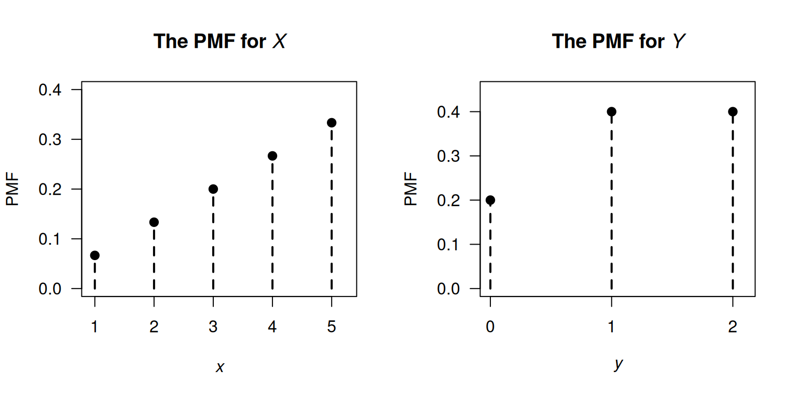
FIGURE 10.2: The PMF for \(X\) and for the transformed variable \(Y\).
10.2.2 Continuous random variables
The change of variable method is similar for continuous random variables, but requires the use of a Jacobian. For a discrete random variable, probability exists at distinct values of the random variable, but probability only exists over intervals for continuous random variables. Suppose the original variable \(X\) has a given probability defined over (say) \(0 < X < 1\); the equivalent probability in the transformed variable \(Y\) may be defined over (say) \(-4 < Y < 4\). The Jacobian is needed to ensure the height of the corresponding density function accommodates this local change in the length of the interval (which may not be linear) over which the equivalent probability is defined.
Theorem 10.1 (Change of variable (continuous rv)) If \(X\) has PDF \(f_X(x)\) for \(x\in \mathcal{R}_X\) and \(u(\cdot)\) is a one-to-one function for \(x\in \mathcal{R}_X\), then the random variable \(Y = u(X)\) has PDF \[ f_Y(y) = f_X(x) \left|\frac{dx}{dy}\right| \] where the right-hand side is expressed as a function of \(y\). The term \(\left|dx/dy\right|\) is called the Jacobian of the transformation.
Proof. Let the inverse function be \(X = w(Y)\) so that \(w(y) = u^{-1}(x)\).
Case 1: \(y = u(x)\) is a strictly increasing function (Fig. 10.3, left panel). If \(a < y < b\) then \(w(a) < x < w(b)\) and \(\Pr(a < Y < b) = \Pr\big(w(a) < X <w(b)\big)\), so \[ {\int^b_a f_Y(y)\,dy =\int^{w(b)}_{w(a)} f_X(x)\,dx =\int^b_a f_X\big( w(y)\big) \frac{dx}{dy}\,\,dy}. \] Therefore, \(\displaystyle {f_Y(y) = f_X\big( w(y) \big)\frac{dx}{dy}}\), where \(w(y) = u^{-1}(x)\).
Case 2: \(y = u(x)\) is a strictly decreasing function of \(x\) (Fig. 10.3, right panel). If \(a < y < b\) then \(w(b) < x < w(a)\) and \(\Pr(a < Y < b) = \Pr\big(w(b) < X < w(a)\big)\), so that \[\begin{align*} \int^b_a f_Y(y)\,dy & = \int^{w(a)}_{w(b)} f_X(x)\,dx\\ & = \int^a_b f_X(x) \frac{dx}{dy}\,\,dy\\ & = - \int ^b_a f_X(x) \frac{dx}{dy}\,dy. \end{align*}\] Therefore \(f_Y(y) = -f_X\left( w(y) \right)\displaystyle{\frac{dx}{dy}}\). Since \(dx/dy\) is negative in the case of a decreasing function, in general \[ f_Y(y) = f_X(x)\left|\frac{dx}{dy} \right|. \]
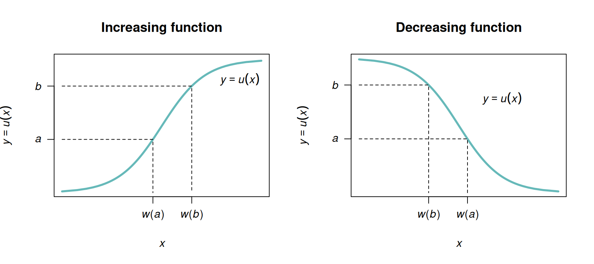
FIGURE 10.3: A strictly increasing one-to-one transformation function (left panel) and strictly decreasing one-to-one function (right panel).
Example 10.5 (Transformation) Let the PDF of \(X\) be given by \[ f_X(x) = \begin{cases} 1 & \text{for $0 < x < 1$};\\ 0 & \text{elsewhere}. \end{cases} \] Consider the transformation \(Y = u(X) = -2\log X\) (where \(\log\) refers to logarithms to base \(e\), or natural logarithms). The transformation is one-to-one, and the inverse transformation is \[ X = \exp( -Y/2) = u^{-1}(Y) = w(Y). \] The space \(\mathcal{R}_X = \{x \mid 0 < x < 1\}\) is mapped to \(\mathcal{R}_Y = \{y \mid 0 < y < \infty\}\). Then, \[ w'(y) = \frac{d}{dy} \exp(-y/2) = -\frac{1}{2}\exp(-y/2), \] and so the Jacobian of the transformation \(|w'(y)| = \exp(-y/2)/2\). The PDF of \(Y = -2\log X\) is \[\begin{align*} f_Y(y) &= f_X\big(w(y)\big) |w'(y)| \\ &= f_X\big(\exp(-y/2)\big) \exp(-y/2)/2 \\ &= \frac{1}{2}\exp(-y/2)\quad\text{for $y > 0$}. \end{align*}\] That is, \(Y\) has an exponential distribution with \(\beta = 2\): \(Y \sim \text{Exp}(2)\) (Def. 8.7).
Example 10.6 (Square root transformation) Consider the random variable \(X\) with PDF \(f_X(x) = \exp(-x)\) for \(x \geq 0\). To find the PDF of \(Y = \sqrt{X}\), first see that \(y = \sqrt{x}\) is a strictly increasing function for \(x \geq 0\) (Fig. 10.4).
The inverse relation is \(X = Y^2\), and \(dx/dy = |2y| = 2y\) for \(x \ge 0\). The PDF of \(Y\) is \[ f_Y(y) = f_X(x)\left|\frac{dx}{dy}\right| = 2y \exp(-y^2)\quad \text{for $y\geq0$}. \]
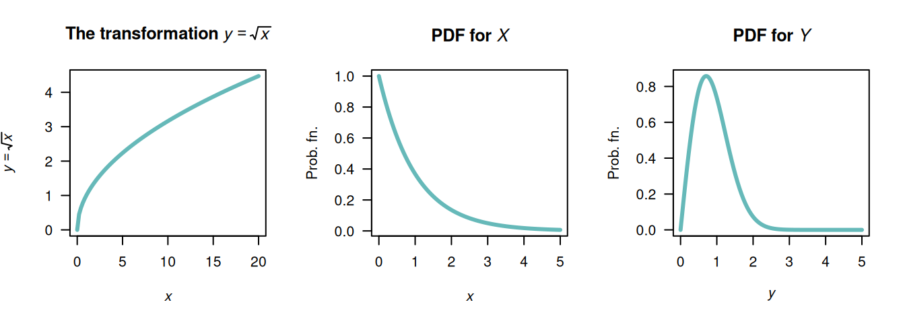
FIGURE 10.4: The square-root transformation (left panel); the PDF of \(X\) (centre panel) and the PDF of \(Y\) (right panel).
Example 10.7 (Tan transformation) Let random variable \(X\) be uniformly distributed on \((-\pi/2, \pi/2)\) Fig. 10.5 (centre panel). Suppose we seek the distribution of \(Y = \tan X\) (Fig. 10.5, left panel).
For the mapping \(Y = \tan X\), we see that \(\mathcal{R}_Y = \{ y\mid -\infty <y<\infty\}\). The mapping is one-to-one, and so \(X = \tan^{-1}Y\), and \(dx/dy = 1/(1 + y^2)\). Hence \[ f_Y(y) = f_X(x)\left|\frac{dx}{dy}\right| = \frac{1}{\pi(1 + y^2)}. \] The distribution is shown in Fig. 10.5 (right panel). This is the Cauchy distribution.
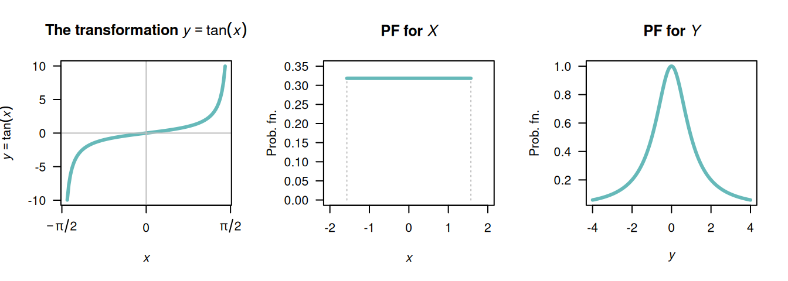
FIGURE 10.5: The tan transformation (left panel); the PDF of \(X\) (centre panel) and the PDF of \(Y\) (right panel).
In cases where the function \(u(\cdot)\) is not a one-to-one transformation over \(\mathcal{R}_X\), usually \(\mathcal{R}_X\) can be split into smaller sets where the transformation is one-to-one in each. We give an example next.
Example 10.8 (Transformation (not 1:1)) Given a random variable \(Z\) which follows a \(N(0, 1)\) distribution, suppose we seek the probability distribution of \(Y = \frac{1}{2} Z^2\). Then: \[ f_Z(z) = \frac{1}{\sqrt{2\pi}}\,\exp\left( -\frac{1}{2} z^2\right)\quad\text{for $-\infty < z < \infty$}. \] The inverse relation, \(Z = u^{-1}(Y)\) is \(Z = \pm \sqrt{2Y}\), which is not strictly increasing or decreasing on \(\mathcal{R}_Z = (-\infty, \infty )\), so Theorem 10.1 cannot be applied directly.
However, the support \(\mathcal{R}_Z\) can be partitioned into two regions where the transformation is one-to-one: \(Z \le 0\) (Region A) and \(Z > 0\) (Region B), where the equality could be in either partition. This is shown in Fig. 10.6. Values of \(a < y < b\) correspond to two regions in \(\mathcal{R}_Z\) (one in each partition): \(-\sqrt{2b} < z < -\sqrt{2a}\) in Region A, and \(\sqrt{2a} < z < \sqrt{2b}\) in Region B. Thus, \[\begin{align*} \Pr(a < Y <b) = &\Pr(-\sqrt{2b} < Z < -\sqrt{2a}\,) + {}\\ &\Pr( \sqrt{2a} < Z < \sqrt{2b}\,). \end{align*}\] The two terms on the right are equal because the distribution of \(Z\) is symmetrical about \(z = 0\), and so \(\Pr(a < Y < b) = 2\Pr(\sqrt{2a} < Z < \sqrt{2b}\,)\). So we can write \[\begin{align*} f_Y(y) &= 2f_Z(z)\left| \frac{dz}{dy}\right|\\ &= 2\frac{1}{\sqrt{2\pi}}\exp(-y)\frac{1}{\sqrt{2y}}; \end{align*}\] that is, \[ f_Y(y) = \exp(-y) y^{-\frac{1}{2}} / \sqrt{\pi}\quad\text{for $0 < y < \infty$}. \] This PDF is a gamma distribution (Sect. 8.5) with parameters \(\alpha = 1/2\) and \(\beta = 1\).
It follows that if \(X\sim N(\mu,\sigma^2)\), then the PDF of \(Y = \frac{1}{2} (X - \mu )^2 / \sigma^2\) is \(\text{Gamma}(\alpha = 1/2,\beta = 1)\) since then \((X - \mu)/\sigma\) is distributed as \(N(0, 1)\).
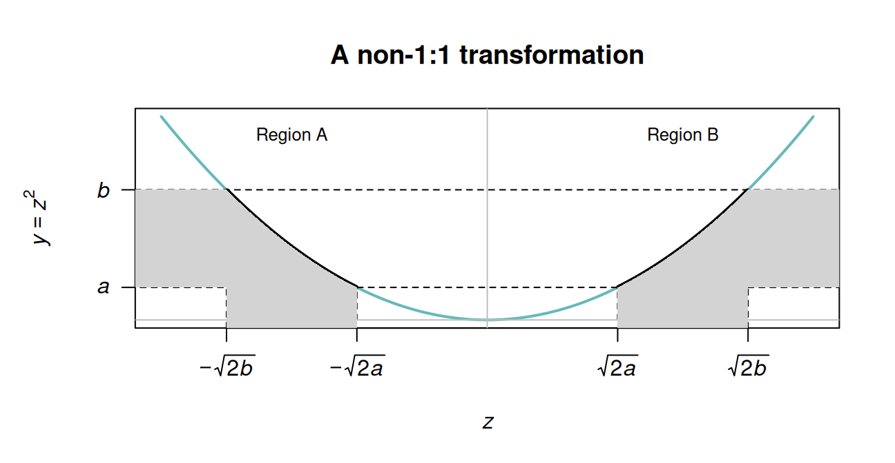
FIGURE 10.6: A transformation that is not 1:1. The transformation is one-to-one in the two regions, Region A and Region B.
Note that the probability can only be doubled as in Example 10.8 if both \(Y = u(Z)\) and the PDF of \(Z\) are symmetrical about the same point.
10.2.3 Bivariate discrete case
The bivariate discrete case is similar to the univariate discrete case. Consider a joint probability function \(p_{X_1, X_2}(x_1, x_2)\) of two discrete random variables \(X_1\) and \(X_2\) defined on the two-dimensional set of points \(R^2_X\) for which \(p(x_1, x_2) > 0\). Two one-to-one transformations need to be defined: \[ y_1 = u_1( x_1, x_2)\qquad\text{and}\qquad y_2 = u_2( x_1, x_2) \] that map \(R^2_X\) onto \(R^2_Y\) (the two-dimensional set of points for which \(p(y_1, y_2) > 0\)). Denote the two inverse functions as \[ x_1 = w_1( y_1, y_2)\qquad\text{and}\qquad x_2 = w_2( y_1, y_2). \] Then the joint probability function of the new (transformed) random variables is \[ p_{Y_1, Y_2}(y_1, y_2) = \begin{cases} p_{X_1, X_2}\big( w_1(y_1, y_2), w_2(y_1, y_2)\big) & \text{where $(y_1, y_2)\in R^2_Y$};\\ 0 & \text{elsewhere}. \end{cases} \]
Example 10.9 (Transformation discrete (bivariate)) Let the two discrete random variables \(X_1\) and \(X_2\) have the joint probability function shown in Table 10.1. Consider the two one-to-one transformations \[ Y_1 = |X_1 + X_2| \qquad\text{and}\qquad Y_2 = X_1 + 1. \] The joint probability function of \(Y_1\) and \(Y_2\) can be found by noting where the \((x_1, x_2)\) pairs are mapped to in the \(y_1, y_2\) space:
| \(\Pr(x_1, x_2)\) | \((x_1, x_2)\) | \(\mapsto\) | \((y_1,y_2)\) |
|---|---|---|---|
| \(0.3\) | \((-1, 0)\) | \(\mapsto\) | \((1, 1)\) |
| \(0.1\) | \((-1, 1)\) | \(\mapsto\) | \((0, 2)\) |
| \(0.1\) | \((-1, 2)\) | \(\mapsto\) | \((1, 3)\) |
| \(0.2\) | \((1, 0)\) | \(\mapsto\) | \((1, 1)\) |
| \(0.2\) | \((1, 1)\) | \(\mapsto\) | \((2, 2)\) |
| \(0.1\) | \((1, 2)\) | \(\mapsto\) | \((3, 3)\) |
The joint probability function can then be constructed as shown in Table 10.2.
| \(x_2 = 0\) | \(x_2 = 1\) | \(x_2 = 2\) | |
|---|---|---|---|
| \(x_1 = -1\) | \(0.3\) | \(0.1\) | \(0.1\) |
| \(x_1 = +1\) | \(0.2\) | \(0.2\) | \(0.1\) |
| \(y_1 = 0\) | \(y_1 = 1\) | \(y_1 = 2\) | \(y_1 = 3\) | |
|---|---|---|---|---|
| \(y_2 = 1\) | \(0.0\) | \(0.5\) | \(0.0\) | \(0.0\) |
| \(y_2 = 2\) | \(0.1\) | \(0.0\) | \(0.2\) | \(0.0\) |
| \(y_2 = 3\) | \(0.0\) | \(0.1\) | \(0.0\) | \(0.1\) |
Sometimes, a joint probability function of two random variables is given, but only one new random variable is required. In this case, a second (dummy) transformation is used, usually a very simple transformation.
Example 10.10 (Transformation (bivariate)) Let \(X_1\) and \(X_2\) be two independent Poisson random variables: \[\begin{align*} p_{X_1}(x_1) &= \frac{\lambda_1^{x_1} \exp(-\lambda_1)}{x_1!}\ \text{for $x_1 = 0, 1, 2, \dots$} \quad\text{and}\\ p_{X_2}(x_2) &= \frac{\lambda_2^{x_2} \exp(-\lambda_2)}{x_2!}\ \text{for $x_2 = 0, 1, 2, \dots$}. \end{align*}\] The joint probability function is \[ p_{X_1, X_2}(x_1, x_2) = \frac{\lambda_1^{x_1} \lambda_2^{x_2} \exp( -\lambda_1 - \lambda_2 )}{x_1!\, x_2!} \quad\text{for $x_1$ and $x_2 = 0, 1, 2, \dots$} \] Suppose we wish to find the probability function of \(Y_1 = X_1 + X_2\).
Consider the two one-to-one transformations (where \(Y_2 = X_2\) is just a dummy transformation since we need to work with two transformations): \[\begin{align} y_1 &= x_1 + x_2 = u_1(x_1, x_2)\\ y_2 &= x_2\phantom{{} + x_2} = u_2(x_1, x_2) \end{align}\] which map the points in \(\mathcal{R}^2_X\) onto \[ \mathcal{R}^2_Y = \left\{ (y_1, y_2)\mid y_1 = 0, 1, 2, \dots; y_2 = 0, 1, 2, \dots, y_1\right\}. \] \(Y_2\) is a dummy transform, and is chosen to be very simple; any second transform could be chosen (since it is not of direct interest). The inverse functions are \[\begin{align*} x_1 &= y_1 - y_2 = w_1(y_1, y_2)\\ x_2 &= y_2 \phantom{{} - y_2} = w_2(y_2) \end{align*}\] by rearranging the original transformations. Then the joint probability function of \(Y_1\) and \(Y_2\) is \[\begin{align*} p_{Y_1, Y_2}(y_1, y_2) &= p_{X_1, X_2}\big( w_1(y_1, y_2), w_2(y_1, y_2)\big) \\ &= \frac{\lambda_1^{y_1 - y_2}\lambda_2^{y_2} \exp(-\lambda_1 - \lambda_2)}{(y_1 - y_2)! y_2!}\quad \text{for $(y_1, y_2)\in \mathcal{R}^2_Y$}. \end{align*}\] Recall that we seek the probability function of just \(Y_1\), so we need to find the marginal probability function of \(p_{Y_1, Y_2}(y_1, y_2)\). The marginal probability function of \(Y_1\) is \[ p_{Y_1}(y_1) = \sum_{y_2 = 0}^{y_1} p_{Y_1, Y_2}(y_1, y_2) = \sum_{y_2 = 0}^{y_1} \frac{\lambda_1^{y_1 - y_2}\lambda_2^{y_2} \exp(-\lambda_1 - \lambda_2)}{(y_1 - y_2)!\, y_2!}. \] To simplify, first multiply and divide by \(y_1!\): \[\begin{align*} p_{Y_1}(y_1) &= \frac{\exp(-\lambda_1 - \lambda_2)}{y_1!} \sum_{y_2 = 0}^{y_1} \frac{y_1!}{(y_1 - y_2)!\, y_2!} \lambda_1^{y_1 - y_2}\lambda_2^{y_2}\\ &= \frac{\exp(-(\lambda_1 + \lambda_2))}{y_1!} \sum_{y_2 = 0}^{y_1} \binom{y_1}{y_2} \lambda_1^{y_1 - y_2}\lambda_2^{y_2}.\\ \end{align*}\] Then, using the binomial theorem (Sect. B.1), this simplifies to \[\begin{align*} p_{Y_1}(y_1) &= \frac{\exp\big(-(\lambda_1 + \lambda_2)\big)}{y_1!} (\lambda_1 + \lambda_2)^{y_1} \\ &= \frac{\exp(-\Lambda)}{y_1!} \Lambda^{y_1} \quad\text{for $y_1 = 0, 1, 2, \dots$} \end{align*}\] where \(\Lambda = \lambda_1 + \lambda_2\). This is the probability function of a Poisson random variable (Def. 7.12) with mean \(\Lambda\). Thus \(Y_1 = X_1 + X_2\) has a Poisson distribution with a mean of \(\lambda_1 + \lambda_2\): the sum of two independent Poisson random variables is also a Poisson random variable.
10.2.4 Bivariate continuous case
With two continuous random variables \((X_1, X_2)\) with a joint PDF \(f_{X_1, X_2}(x_1, x_2)\), two transformations are needed to transform them into two new random variables \((Y_1, Y_2)\): \[ Y_1 = u_1(X_1, X_2) \quad \text{and} \quad Y_2 = u_2(X_1, X_2). \] The joint PDF of the new variables is \[ f_{Y_1, Y_2}(y_1, y_2) = f_{X_1, X_2}(x_1, x_2) \cdot |\det J| \] where \(|\det(J)|\) is the absolute value of the Jacobian determinant: \[ J = \begin{bmatrix} {\partial x_1}/{\partial y_1} & {\partial x_1}/{\partial y_2} \\[6pt] {\partial x_2}/{\partial y_1} & {\partial x_2}/{\partial y_2} \end{bmatrix}, \] so that \[ \det(J) = \frac{\partial x_1}{\partial y_1} \frac{\partial x_2}{\partial y_2} - \frac{\partial x_1}{\partial y_2} \frac{\partial x_2}{\partial y_1}. \] The Jacobian plays an equivalent role to \(\left|dx/dy\right|\) in the univariate case.
Example 10.11 (Transformation continuous (bivariate)) Let \(X_1\) and \(X_2\) be independent exponential random variables with \(\lambda = 1\), such that both PDFs are \[ f_{X_1}(x_1) = \exp(-x_1)\quad\text{for $x_1 > 0$} \quad\text{and}\quad f_{X_2}(x_2) = \exp(-x_2)\quad\text{for $x_2 > 0$}. \] That is, \(X_1, X_2 \overset{\text{iid}}{\sim} \text{Exponential}(\lambda = 1)\). Consider the two transformations \(Y_1 = X_1 + X_2\) (the sum) and \(Y_2 = X_1 / X_2\) (the ratio). Then, \(y_1 > 0\) and \(y_2 > 0\).
Since the random variable \(X_1\) and \(X_2\) are iid, the joint PDF of \(X_1\) and \(X_2\) is \[ f_{X_1, X_2}(x_1, x_2) = \exp(-x_1) \cdot \exp(-x_2) = \exp\left(-(x_1 + x_2)\right) \quad \text{for $x_1, x_2 > 0$}. \] Inverting the transformations gives \[ x_1 = \frac{y_1 y_2}{1 + y_2} \quad\text{and}\quad x_2 = \frac{y_1}{1 + y_2}. \] The Jacobian requires the four partial derivatives: \[ \begin{array}{ll} \displaystyle \frac{\partial x_1}{\partial y_1} = \frac{y_2}{1+y_2};\quad & \quad\displaystyle \frac{\partial x_1}{\partial y_2} = \frac{y_1(1+y_2) - y_1 y_2}{(1+y_2)^2} = \frac{y_1}{(1+y_2)^2};\\[12pt] \displaystyle \frac{\partial x_2}{\partial y_1} = \frac{1}{1+y_2};\quad & \quad\displaystyle \frac{\partial x_2}{\partial y_2} = \frac{-y_1}{(1+y_2)^2}. \end{array} \] So the Jacobian determinant is \[\begin{align*} \det J &= \left( \frac{y_2}{1+y_2} \cdot \frac{-y_1}{(1+y_2)^2} \right) - \left( \frac{1}{1+y_2} \cdot \frac{y_1}{(1+y_2)^2} \right)\\ &= \frac{-y_1 y_2 - y_1}{(1+y_2)^3}\\ &= \frac{-y_1(y_2 + 1)}{(1+y_2)^3}. \end{align*}\] Finally, substitute \(x_1\) and \(x_2\) and \(\det J\) into the formula: \[ f_{Y_1, Y_2}(y_1, y_2) = \exp(-(x_1 + x_2)) \cdot \left| \frac{-y_1}{(1 + y_2)^2} \right|. \] Since \(x_1 + x_2 = y_1\), write \[ f_{Y_1, Y_2}(y_1, y_2) = \frac{y_1 \exp(-y_1)}{(1+y_2)^2}\quad\text{for $y_1 > 0$ and $y_2 > 0$}. \]
Example 10.12 (Distribution of squared normal rv) Let \(X \sim N(0, 1)\) and \(Y = X^2\). Since \(u(x) = x^2\) is not monotone on \(\mathbb{R}\), the change of variable method requires partitioning; the distribution function method is simpler.
First, see that the support for \(X\) is over \(\mathbb{R}\), but the support for \(Y = X^2\) must be over the non-negative reals. Furthermore, since individual points have zero probability for continuous random variables, \(X = 0\) is not technically possible, so the support is best given as \((0, \infty)\) or \([0, \infty)\) (see Fig. 10.7).
So, for \(y > 0\): \[ F_Y(y) = \Pr(X^2 \leq y) = \Pr(-\sqrt{y} \leq X \leq \sqrt{y}) = F_X(\sqrt{y}) - F_X(-\sqrt{y}) = 2F_X(\sqrt{y}) - 1. \]
Differentiating: \[ f_Y(y) = 2 f_X(\sqrt{y}\,) \cdot \frac{1}{2\sqrt{y}} = \frac{1}{\sqrt{y}} \cdot \frac{1}{\sqrt{2\pi}} \exp(-y/2) = \frac{y^{1/2 - 1} \exp(-y/2)}{2^{1/2}\,\Gamma(1/2)}, \quad y > 0. \] Notice that \(Y > 0\); if \(Y = 0\) the PMF is undefined. The final expressions identifies this as the \(\chi^2(1)\) distribution (i.e., \(\text{Gamma}(1/2,\, 1/2)\)).
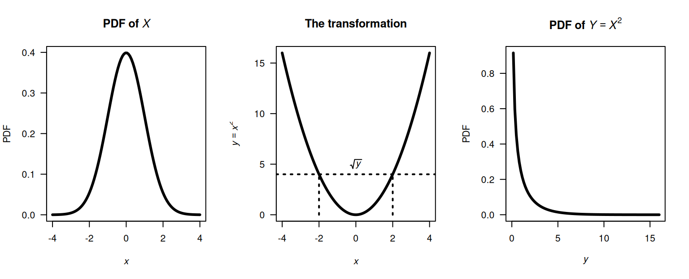
FIGURE 10.7: A normal distribution (left panel), the transformation (centre panel), and the resulting chi-squared distribution (right panel).
10.2.5 Summary
The change of variable method requires find the pre-image, then accounting for the how transformation redistributes probability (through counting in the discrete case; through the Jacobian in the continuous case); see Table 10.3.
| Setting | Discrete | Continuous |
|---|---|---|
| Univariate | Sum \(p_X(x)\) over every \(x\) that transforms into \(y\) | Substitute inverse; multiply by \(|\det J|\) |
| Bivariate | Sum \(p_{X_1, X_2}(x_1, x_2)\) over every \((x_1, x_2)\) that transforms into \((y_1, y_2)\) | Substitute inverses; multiply by \(|\det J|\) |
10.3 The distribution function method
The distribution function method is the most broadly applicable technique for finding the distribution of a transformed random variable. The strategy is to:
- Write \(F_Y(y) = \Pr(Y \leq y) = \Pr(g(X) \leq y)\).
- Re-express the event \(\{g(X) \leq y\}\) as an equivalent event in terms of \(X\).
- Evaluate using the known distribution of \(X\).
- Differentiate (continuous case) or take differences (discrete case) to obtain the PDF: \(f_Y(y) = F_Y'(y)\).
The distribution function method operates with probabilities rather than densities, so it works with non-monotone transformations, awkward supports, and many-to-one mappings without requiring the special conditions needed with the change of variables method (i.e., one-to-one transformations; differentiable transformations).
The functions that are produced should be valid probability functions; check that this is the case.
10.3.1 Continuous random variables
The general procedure above is best demonstrated using an example.
Example 10.13 (Distribution function method) Consider the random variable \(X\) with PDF \[ f_X(x) = \begin{cases} x/4 & \text{for $1 < x < 3$};\\ 0 & \text{elsewhere}. \end{cases} \] To find the PDF of the random variable \(Y\) where \(Y = X^2\), first see that \(1 < y < 9\) and the transformation is monotonic over this region. The distribution function for \(Y\) is \[\begin{align*} F_Y(y) &= \Pr(Y\le y) \qquad\text{(by definition)}\\ &= \Pr(X^2 \le y) \qquad\text{(since $Y = X^2$)}\\ &= \Pr(X\le \sqrt{y}\,). \end{align*}\] This last step is not trivial, but is critical. Sometimes, more care is needed (see Example 10.14). In this case, there is a one-to-one relationship between \(X\) and \(Y\) over the region of which \(X\) is defined (i.e., has a positive probability); see Fig. 10.8.
Then continue as follows: \[\begin{align*} F_Y(y) =\Pr( X\le \sqrt{y}\,) &= F_X\big(\sqrt{y}\,\big) \qquad\text{(definition of $F_X(x)$)} \\ &= \int_1^{\sqrt{y}} (x/4) \,dx = (y - 1)/8 \end{align*}\] for \(1 < y < 9\), and is zero elsewhere. This is the distribution function of \(Y\); the PDF is \[ f_Y(y) = \frac{d}{dy} (y - 1)/8 = \begin{cases} 1/8 & \text{for $1 < y < 9$};\\ 0 & \text{elsewhere}. \end{cases} \] Note the range for which \(Y\) is defined; since \(1 < x < 3\), then \(1 < y < 9\).
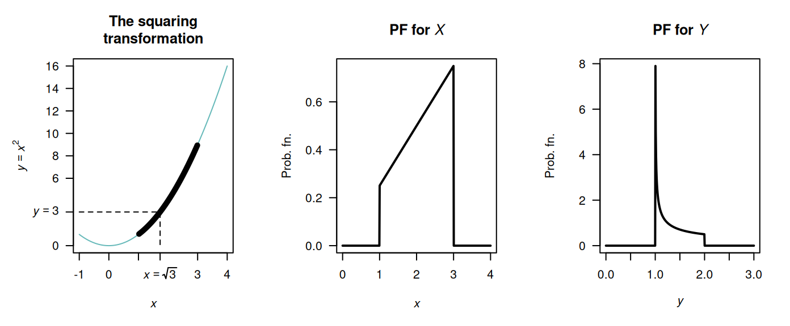
FIGURE 10.8: The transformation \(Y = X^2\) when \(X\) is defined from \(1\) to \(3\). The thicker line corresponds to the region where the transformation applies. Note that if \(Y < y\), then \(2 - \sqrt{y - 1} < X < 2 + \sqrt{y - 1}\).
Example 10.14 (Transformation) Consider the same random variable \(X\) as in the previous example, but the transformation \(Y = (X - 2)^2 + 1\) (Fig. 10.9).
In this case, the transformation is not a one-to-one transform. Proceed as before to find the distribution function of \(Y\): \[\begin{align*} F_Y(y) &= \Pr(Y\le y) \qquad\text{(by definition)}\\ &= \Pr\big( (X - 2)^2 + 1 \le y\big) \end{align*}\] since \(Y = (X - 2)^2 + 1\). From Fig. 10.9, whenever \((X - 2)^2 + 1 < y\) for some value \(y\), then \(X\) must be in the range \(2 - \sqrt{y - 1}\) to \(2 + \sqrt{y - 1}\). So: \[\begin{align*} F_Y(y) &= \Pr\big( (X - 2)^2 + 1 \le y\big) \\ &= \Pr\left( 2 - \sqrt{y - 1} < X < 2 + \sqrt{y - 1} \right)\\ &= \int_{2-\sqrt{y - 1}}^{2 + \sqrt{y - 1}} x/4\,dx \\ &= \sqrt{y - 1}. \end{align*}\] Again, this is the distribution function; so differentiating to find the PDF gives \[ f_Y(y) = \begin{cases} \frac{1}{2\sqrt{y - 1}} & \text{for $1 < y < 2$};\\ 0 & \text{elsewhere}. \end{cases} \]
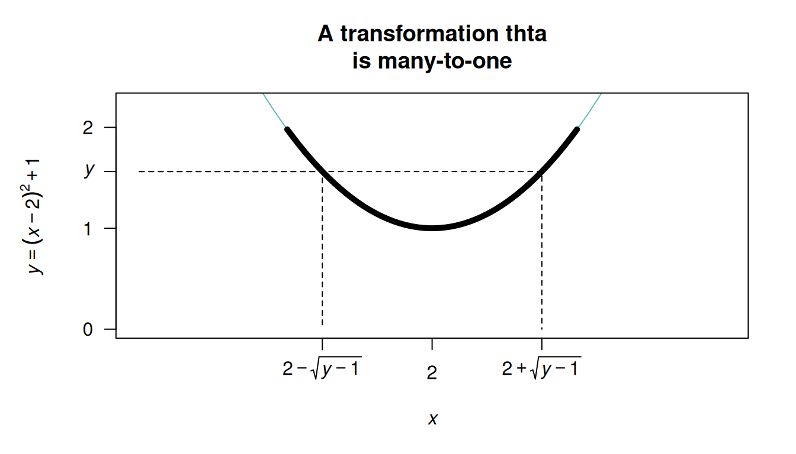
FIGURE 10.9: The transformation \(Y = (X - 2)^2 + 1\) when \(X\) is defined from \(1\) to \(3\). The thicker line corresponds to the region where the transformation applies. Note that if \(Y < y\), then \(2 - \sqrt{y - 1} < X < 2 + \sqrt{y - 1}\).
Example 10.15 (Transformation) Example 10.8 is repeated here using the distribution function method. Given \(Z\) is distributed \(N(0, 1)\) we seek the probability distribution of \(Y = \frac{1}{2} Z^2\). First, \[ f_Z(z) = (2\pi )^{-\frac 12}\,\exp(-z^2/2)\quad\text{for $z\in (-\infty ,\,\infty )$}. \] Let \(Y\) have PDF \(f_Y(y)\) and df \(F_Y(y)\). Then \[\begin{align*} F_Y(y) = \Pr(Y\leq y) &= \Pr\left(\frac{1}{2}Z^2\leq y\right)\\ &= \Pr(Z^2\leq 2y)\\ & = \Pr(-\sqrt{2y}\leq Z\leq \sqrt{2y}\,)\\ & = F_Z(\sqrt{2y}\,) - F_Z(-\sqrt{2y}\,) \end{align*}\] where \(F_Z\) is the distribution function of \(Z\). Hence \[\begin{align*} f_Y(y) = F_Y'(y) &= F_Z'(\sqrt{2y}\,)-F_Z'(-\sqrt{2y}\,)\\ &= \frac{\sqrt{2}}{2\sqrt{y}}f_Z(\sqrt{2y}\,) - \frac{\sqrt{2}}{-2\sqrt{y}}f_Z(-\sqrt{2y}\,)\\[2mm] &= \frac{1}{\sqrt{2y}}[f_Z(\sqrt{2y}\,) + f_Z(-\sqrt{2y}\,)]\\ &= \frac{1}{\sqrt{2y}} \left[ \frac{1}{\sqrt{2\pi}}\,\exp(-y) + \frac{1}{\sqrt{2\pi}}\,\exp(-y)\right]\\ &= \frac{\exp(-y)\,y^{-\frac{1}{2}}}{\sqrt{\pi}} \end{align*}\] as before.
Example 10.16 (Distribution function method, with two parts) Consider the random variable \(X\) with the probability density function (Fig. 10.10, left panel) \[ f_X(x) = \begin{cases} 1/2 & \text{for $0 < x < 1$};\\ (3 - x)/4 & \text{for $1 < x < 3$.} \end{cases} \] Then, consider the distribution of \(Y = X^2\); then, \(0 < y < 9\). More specifically, \(\{ x \mid 0 < x < 1\}\) maps to \(\{y \mid 0 < y < 1\}\) and \(\{ x \mid 1 < x < 3\}\) maps to \(\{y \mid 1 < y < 9\}\).
To use the distribution function method, the distribution function of \(X\) is needed: \[ F_X(x) = \begin{cases} 0 & \text{for $x < 0$}\\ x/2 & \text{for $0 < x < 1$};\\ -(x^2 - 6x + 1)/8 & \text{for $1 < x < 3$}\\ 1 & f\text{for $x \ge 3$}. \end{cases} \] Then proceed: \[\begin{align*} F_Y(y) &= \Pr(Y \le y)\\ &= \Pr(X^2 \le y)\\ &= \Pr(X \le \sqrt{Y})\\ &= F_X(\sqrt{y}\,)\\ &= \begin{cases} \sqrt{y}/2 & \text{for $0 < y < 1$}\\ -(y - 6\sqrt{y} + 1)/8 & \text{for $1 < y < 9$}. \end{cases} \end{align*}\] To recover the PDF of \(Y\) (Fig. 10.10, right panel), differentiate to obtain \[ f_Y(y) = \begin{cases} \displaystyle \frac{1}{4\sqrt{y}} & \text{for $0 < y < 1$}\\[6pt] \displaystyle \frac{3}{8\sqrt{y}} - \frac{1}{8} & \text{for $1 < y < 9$}. \end{cases} \]
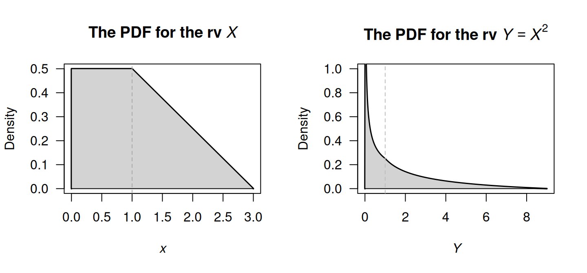
FIGURE 10.10: The probability density functions of \(X\) (left) and \(Y = X^2\) (right).
Care is needed to ensure the steps are followed logically. Diagrams like Fig. 10.8 and 10.9 are encouraged.
Example 10.17 (Proof of Theorem 6.1) Theorem 6.1 gave an important theorem involving the expectation of function of a random variable. Here, we prove this theorem for the discrete and continuous cases.
For the discrete case , we need to show that \(\sum_{\mathcal{R}_Y} y\cdot \Pr(u(X) = y) = \sum_x u(x)\, \Pr(X = x)\) for \(y \in \mathcal{R}_Y\), for some transformation \(Y = u(X)\).
By definition, \(\operatorname{E}[Y] = \sum_{\mathcal{R}_Y} y\cdot \Pr(Y = y)\). Recall that the event \(\{Y = y\}\) is actually the set of all \(x\) such that \(u(x) = y\), so substituting gives \(\Pr(Y = y) = \sum_{x: u(x) = y} \Pr(X = x)\). Substituting this into the expectation: \[ \operatorname{E}[u(X)] = \sum_{\mathcal{R}_Y} y \left( \sum_{x: u(x) = y} \Pr(X = x) \right). \] Since \(y = u(x)\) for all \(x\) in the inner sum, it can be moved inside the inner summation: \[\begin{align*} \operatorname{E}[u(X)] &= \sum_{\mathcal{R}_Y} \sum_{x: u(x) = y} y\cdot \Pr(X = x)\\ &= \sum_{\mathcal{R}_Y} \sum_{x: u(x) = y} u(x)\cdot \Pr(X = x). \end{align*}\] The double sum partitions the range of \(X\), so every \(x\) appears exactly once. In other words, \(\operatorname{E}[u(X)] = \sum_x u(x) \Pr(X = x)\).
For the continuous case, we need to show that \(\int_{-\infty}^\infty y\cdot f_Y(y)\, dy = \int_{-\infty}^\infty u(x)\, f_X(x)\, dx\).
Assume \(u(x)\) is a strictly increasing, differentiable function (this makes the proof simpler, but the result applies more generally). Let \(Y = u(X)\). Find the PDF of \(Y\) using the transformation method: \[ f_Y(y) = f_X(x) \left| \frac{dx}{dy} \right| \quad \text{where } x = u^{-1}(y). \] Then, using the definition of \(\operatorname{E}[Y]\): \[ \operatorname{E}[Y] = \int_{-\infty}^{\infty} y\cdot f_Y(y) \, dy. \] Substitute \(y = u(x)\) and \(f_Y(y)\, dy = f_X(x)\, dx\): \[\begin{align*} \operatorname{E}[Y] &= \int_{-\infty}^{\infty} u(x) \cdot f_X(x) |u'(x)| \cdot \frac{1}{|u'(x)|} \, dx\\ &= \int_{-\infty}^{\infty} u(x)\,f_X(x)\,dx \end{align*}\]
10.3.2 Discrete univariate case
Let \(X\) be a discrete random variable with PMF \(p_X(x)\) and CDF \(F_X(x) = \Pr(X \leq x)\). For \(Y = u(X)\), the CDF of \(Y\) is \[ F_Y(y) = \Pr(Y \leq y) = \Pr(u(X) \leq y) = \sum_{\{x:\, u(x) \leq y\}} p_X(x). \] The PMF of \(Y\) is then recovered as \[ p_Y(y) = F_Y(y) - F_Y(y^-) \] where \(y^-\) denotes the largest value in the support of \(Y\) that is strictly less than \(y\). When \(Y\) takes consecutive integer values (such as \(\{0, 1, 2, \dots\}\) or \(\{1, 2, 3, \dots\}\)), this simplifies to \(F_Y(y) - F_Y(y - 1)\).
In the discrete case, the CDF method and the change of variables method are closely related; the difference is mainly one of presentation. The distribution function is especially natural when \(u(\cdot)\) is monotone non-decreasing, since the event \(\{u(X) \leq y\}\) maps cleanly to \(\{X \leq u^{-1}(y)\}\).
Example 10.18 (Shifting the geometric distribution) Let \(X \sim \text{Geometric}(p)\), so that \(X\) represents the number of failures until the first success, with support \(\{0, 1, 2, \ldots\}\) (as in Sect. 7.5). Then, \[ \Pr(X \leq x) = 1 - (1-p)^{\lfloor x\rfloor + 1}, \quad x = 0, 1, 2, \ldots \] Define \(Y = X + 1\), so that \(Y\) is the number of trials up to and including the first success, with support \(\{1, 2, 3, \ldots\}\). For \(y \in \{1, 2, 3, \ldots\}\): \[\begin{align*} F_Y(y) = \Pr(Y \leq y) &= \Pr(X + 1 \leq y)\\ &= \Pr(X \leq y - 1)\\ &= 1 - (1 - p)^{(y - 1) + 1}\\ &= 1 - (1 - p)^{y}, \end{align*}\] using the DF for \(X\) above. The PMF is the difference between the DF at the values of \(Y\) with positive probabilities (see Sect. 4.4.5): \[ p_Y(y) = F_Y(y) - F_Y(y - 1) = (1 - p)^{y - 1} p, \quad y = 1, 2, 3, \ldots \] This is the \(\text{Geometric}(p)\) distribution with a different parameterisation. A simple shift of support corresponds to a reparameterisation within the geometric family of distributions.
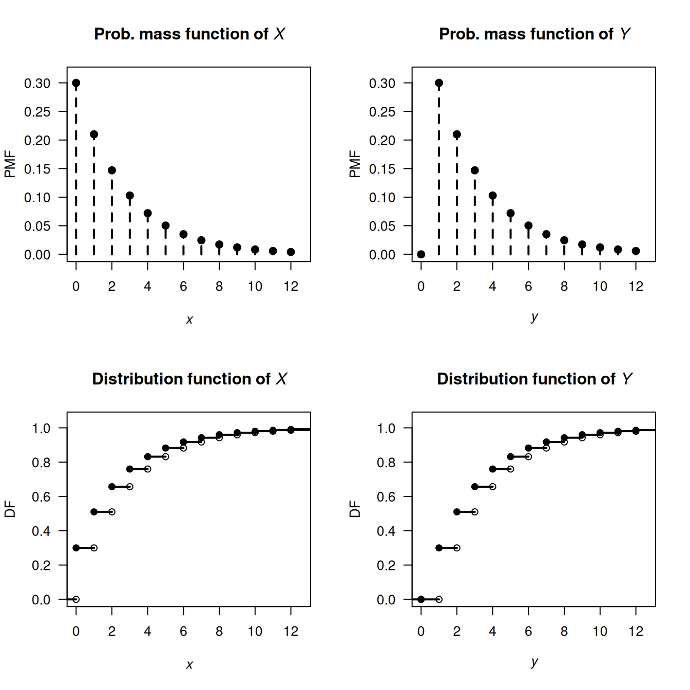
FIGURE 10.11: The PMF and DF of \(X\) following a geometric distribution (left panels), and the PMF and DF of the transformation \(Y = X + 1\).
10.3.3 Bivariate continuous case
Let \((X_1, X_2)\) have joint PDF \(f_{X_1, X_2}(x_1, x_2)\). To find the distribution of \(Y = u(X_1, X_2)\) (a scalar function of \(X_1\) and \(X_2\)), compute \[ F_Y(y) = \Pr(u(X_1, X_2) \leq y) = \iint_{\{(x_1,x_2):\, u(x_1,x_2) \leq y\}} f_{X_1, X_2}(x_1, x_2)\, dx_1\, dx_2, \] then differentiate: \(f_Y(y) = F_Y'(y)\).
The key step is characterising the region of integration \(\{u(x_1,x_2) \leq y\}\) carefully as a function of \(y\), paying attention to how its boundaries move as \(y\) changes. This is often where the difficulty lies, and a sketch of the support is strongly recommended.
Example 10.19 (Distribution of $M = \max(X_1, X_2)$ for independent uniforms distributions) Let \(X_1, X_2 \overset{\text{iid}}{\sim} \text{Uniform}(0,1)\) with joint PDF \(f_{X_1, X_2}(x_1, x_2) = 1\) on the unit square (Fig. 10.12, left panel). Define \(M = \max(X_1, X_2)\).
The event \(\{M \leq m\}\) is equivalent to \(\{X_1 \leq m \text{ and } X_2 \leq m\}\) (see Fig. 10.12), so for \(m \in [0, 1]\): \[ F_M(m) = \Pr(X_1 \leq m,\, X_2 \leq m) = m \cdot m = m^2. \] Differentiating, the PDF is \[ f_M(m) = 2m, \quad m \in [0, 1]. \] This is the \(\text{Beta}(2, 1)\) distribution (Fig. 10.12, right panel). More generally, for \(X_1, X_2, \dots, X_n \overset{\text{iid}}{\sim} \text{Uniform}(0,1)\), we find \(M = \max(X_1,\ldots,X_n)\) has CDF \(m^n\) and PDF \(nm^{n-1}\), a \(\text{Beta}(n, 1)\) distribution. This extends naturally to order statistics (Chap. 14).

FIGURE 10.12: The joint distribution of the maximum from two uniform distributions.
10.3.4 Bivariate discrete case
Let \((X_1, X_2)\) have joint PMF \(p_{\mathbf{X}}(x_1, x_2)\). For \(Y = u(X_1, X_2)\), the CDF of \(Y\) is \[ F_Y(y) = \Pr(Y \leq y) = \sum_{\{(x_1,x_2):\, g(x_1,x_2) \leq y\}} p_{\mathbf{X}}(x_1, x_2), \] and the PMF is recovered as \(p_Y(y) = F_Y(y) - F_Y(y^-)\) where \(y^-\) denotes the largest value in the support of \(Y\) strictly less than \(y\).
The bivariate discrete CDF method is often the most natural approach when \(u(\cdot)\) is a many-to-one function (such as a maximum or minimum), where enumerating pre-images directly would be cumbersome, but the event \(\{u(X_1, X_2) \leq y\}\) has a simple geometric or combinatorial description.
Example 10.20 (Maximum of two independent binomial distributions) Let \(X_1 \sim \text{Binomial}(n_1, p)\) and \(X_2 \sim \text{Binomial}(n_2, p)\) independently. Define \(M = \max(X_1, X_2)\).
Using the same ideas as in the continuous case, for \(m \in \{0, 1, \ldots, \max(n_1, n_2)\}\): \[ F_M(m) = \Pr(X_1 \leq m,\, X_2 \leq m) = F_{X_1}(m) \cdot F_{X_2}(m) \] by independence. The probability mass function is then \[ p_M(m) = F_M(m) - F_M(m - 1) = F_{X_1}(m)F_{X_2}(m) - F_{X_1}(m-1)F_{X_2}(m-1). \] This does not simplify to a standard named distribution in general; the CDF method can yield the distribution even when it has no closed-form family name.
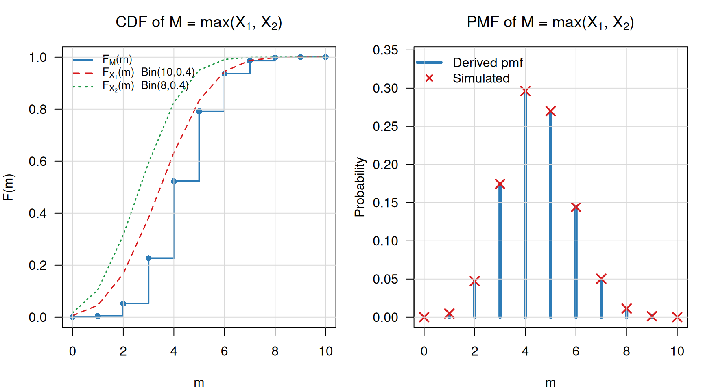
10.3.5 Summary
The distribution function method is preferred over the change of variables method when
- the transformation is many-to-one (e.g. maximum, minimum, absolute value);
- the result is not a standard named distribution; or
- only a marginal distribution is needed from a multivariate problem.
The approach is summarised in Table 10.4.
| Setting | Strategy | PDF recovery |
|---|---|---|
| Discrete univariate | \(F_Y(y) = \sum_{\{x:\,g(x)\leq y\}} p_X(x)\); pmf = \(\Delta F_Y\) | Difference the CDF |
| Continuous univariate | \(F_Y(y) = \Pr(g(X)\leq y)\); invert inequality; use \(F_X\) | Differentiate the CDF |
| Discrete bivariate | \(F_Y(y) = \iint_{\{g\leq y\}} f_{X_1, X_2}\); characterise region | Differentiate the CDF |
| Continuous bivariate | \(F_Y(y) = \sum\sum_{\{g\leq y\}} p_{X_1, X_2}\); pmf = \(\Delta F_Y\) | Difference the CDF |
10.4 The moment generating function method
The moment generating function (MGF) method is useful for finding the distribution of a linear combination of \(n\) independent random variables. The method essentially involves the computation of the MGF of the transformed variable \(Y = u(X_1, X_2, \dots, X_n)\) when the joint distribution of independent \(X_1, X_2, \dots, X_n\) is given.
The MGF method relies on this observation: since the MGF of a random variable (if it exists) completely specifies the distribution of the random variable, then if two random variables have the same MGF they must have identical distributions. Below, the transformation \(Y = X_1 + X_2 + \cdots X_n\) is demonstrated, but the same principles can be applied for other linear combinations also.
Consider \(n\) independent random variables \(X_1, X_2, \dots, X_n\) with MGFs \(M_{X_1}(t)\), \(M_{X_2}(t)\), \(\dots\), \(M_{X_n}(t)\), and consider the transformation \(Y = X_1 + X_2 + \cdots X_n\). Since the \(X_i\) are independent, \(f_{X_1,X_2\dots X_n}(x_1, x_2, \dots, x_n) = f_{X_1}(x_1).f_{X_2}(x_2)\dots f_{X_n}(x_n)\). So, by definition of the MGF, \[\begin{align*} M_Y(t) &= \operatorname{E}(\exp(tY)) \\ &= \operatorname{E}(\exp[t(X_1 + X_2 + \cdots X_n)]) \\ &= \int\!\!\!\int\!\!\!\cdots\!\!\!\int \exp[t(x_1 + x_2 + \cdots x_n)] f(x_1, x_2, \dots x_n)\,dx_n\dots dx_2\, dx_1 \\ &= \int\!\!\!\int\!\!\!\cdots\!\!\!\int \exp(tx_1) f(x_1) \exp(t{x_2}) f(x_2)\dots \exp(t{x_n})f(x_n) \,dx_n\dots dx_2\, dx_1 \\ &= \int \exp(t x_1) f(x_1)\,dx_1 \int \exp(t{x_2}) f(x_2)\,dx_2 \dots \int \exp(t{x_n})f(x_n)\,dx_n \\ &= M_{X_1}(t) M_{X_2}(t)\dots M_{X_n}(t) \\ &= \prod_{i = 1}^n M_{X_i}(t). \end{align*}\] (\(\prod\) is the symbol for a product of terms, in the same way that \(\sum\) is the symbol for a summation of terms.) The above result also holds for discrete variables, where summations replace integrations.
This result follows: if \(X_1, X_2, \dots, X_n\) are independent random variables and \(Y = X_1 + X_2 + \dots + X_n\), then the MGF of \(Y\) is \[ M_Y(t) = \prod_{i = 1}^n M_{X_i}(t) \] where \(M_{X_i}(t)\) is the MGF of \(X_i\) at \(t\) for \(i = 1, 2, \dots, n\).
Example 10.21 (MGF method for transformations) Suppose that \(X_i \sim \text{Poisson}(\lambda_i)\) for \(i = 1, 2, \dots, n\), and we wish to find the distribution of \(Y = X_1 + X_2 + \dots + X_n\).
Since \(X_i\) has a Poisson distribution with parameter \(\lambda_i\) for \(i, 2, \dots n\), the MGF of \(X_i\) is \[ M_{X_i}(t) = \exp[ \lambda_i(e^t - 1)]. \] The MGF of \(Y = X_1 + X_2 + \cdots X_n\) is \[\begin{align*} M_Y(t) &= \prod_{i = 1}^n \exp[ \lambda_i(e^t - 1)] \\ &= \exp[ \lambda_1(e^t - 1)] \exp[ \lambda_2(e^t - 1)] \dots \exp[ \lambda_n(e^t - 1)] \\ &= \exp\left[ (e^t - 1)\sum_{i = 1}^n \lambda_i\right]. \end{align*}\] Using \(\Lambda = \sum_{i = 1}^n \lambda_i\), the MGF of \(Y\) is \[ M_Y(t) = \exp\left[ (e^t - 1)\Lambda \right], \] which is the MGF of a Poisson distribution with mean \(\Lambda = \sum_{i = 1}^n \lambda_i\). This means that the sum of \(n\) independent Poisson distribution is also a Poisson distribution, whose mean is the sum of the individual Poisson means.
10.5 Choosing a method
The change of variables method is used when the transformation is smooth and monotone (or piecewise monotone), and the full (joint) distribution is required. This method is particularly useful in the bivariate and multivariate continuous case: in the Gamma/Beta example (CITE), for example, the joint PDF is obtained directly, and so independence is i=easily identified from factorisation. In the discrete case, the change of variable method is effectively careful bookkeeping rather than a distinct technique. The change of variable method is best avoided when the Jacobian computation is intractable or difficult, or when the full PDF is not needed and only moments are of interest.
The distribution function method is the most general method: it works for any transformation, discrete or continuous. It is also intuitive: compute \(\Pr(Y le y)\) and differentiate or find differences. The distribution function method, however, can become algebraically tedious, and can become complicated with multivariate or multi-step transformations.
The MGF method is only useful in very specific situations, but in these situations it excels. It is most applicable for sums of random variables; for example, proving that a sum (or linear combination) of independent random variables follows a particular named distribution, since the MGFs are multiplied, and the resulting MGF matched to MGFs of known distributions. The MGF method cnbe used, for example, to show that the sum of independent normal distributions is a normal distributions, that the sum of independent Poisson distributions sum to Poisson distributions, and so on. However, the MGF may not exist, and the method reveals nothing about the joint distribution of a transformed vector; it is useless when the transformation is not a sum or linear combination.
10.6 Exercises
Selected answers appear in Sect. F.9.
Exercise 10.1 Suppose the PDF of \(X\) is given by \[ f_X(x) = \begin{cases} x/2 & \text{$0 < x < 2$};\\ 0 & \text{otherwise}. \end{cases} \]
- Find the PDF of \(Y = X^3\) using the change of variable method.
- Find the PDF of \(Y = X^3\) using the distribution function method.
Exercise 10.2 The discrete bivariate random vector \((X_1, X_2)\) has the joint probability function \[ f_{X_1, X_2}(x_1, x_2) = \begin{cases} (2x_1+ x _2)/6 & \text{for $x_1 = 0, 1$ and $x_2 = 0, 1$};\\ 0 & \text{elsewhere}. \end{cases} \] Consider the transformations \[\begin{align*} Y_1 &= X_1 + X_2 \\ Y_2 &= \phantom{X_1+{}} X_2 \end{align*}\]
- Determine the joint probability function of \((Y_1, Y_2)\).
- Deduce the distribution of \(Y_1\).
Exercise 10.3 Consider \(n\) random variables \(X_i\) such that \(X_i \sim \text{Gamma}(\alpha_i, \beta)\). Determine the distribution of \(Y = \sum_{i = 1}^n X_i\) using MGFs.
Exercise 10.4 The random variable \(X\) has PDF \[ f_X(x) = \frac{1}{\pi(1 + x^2)} \] for \(-\infty < x < \infty\). Find the PDF of \(Y\) where \(Y = X^2\).
Exercise 10.5 A random variable \(X\) has distribution function \[ F_X(x) = \begin{cases} 0 & \text{for $x \le -0.5$};\\ (2x + 1)/2 & \text{for $-0.5 < x < 0.5$};\\ 1 & \text{for $x \ge 0.5$}. \end{cases} \]
- Find, and plot, the PDF of \(X\).
- Find the distribution function, \(F_Y(y)\), of the random variable \(Y = 4 - X^2\).
- Hence find, and plot, the PDF of \(Y\), \(f_Y(y)\).
Exercise 10.6 Suppose a projectile is fired at an angle \(\theta\) from the horizontal with velocity \(v\). The horizontal distance that the projectile travels \(D\) is \[ D = \frac{v^2}{g} \sin 2\theta, \] where \(g\) is the acceleration due to gravity (\(g\approx 9.8\) m.s\(-2\)).
- If \(\theta\) is uniformly distributed over the range \((0, \pi/4)\), find the probability density function of \(D\).
- Sketch the PDF of \(D\) over a suitable range for \(v = 12\) and using \(g\approx 9.8\)m.s\(-2\).
Exercise 10.7 Most computers have facilities to generate continuous uniform (pseudo-)random numbers between zero and one, say \(X\). When needed, exponential random numbers are obtained from \(X\) using the transformation \(Y = -\alpha\ln X\).
- Show that \(Y\) has an exponential distribution and determine its parameters.
- Deduce the mean and variance of \(Y\).
Exercise 10.8 Consider a random variable \(W\) for which \(\Pr(W = 2) = 1/6\), \(\Pr(W = -2) = 1/3\) and \(\Pr(W = 0) = 1/2\).
- Plot the probability function of \(W\).
- Find the mean and variance of \(W\).
- Determine the distribution of \(V = W^2\).
- Find the distribution function of \(W\).
Exercise 10.9 In a study to model the load on bridges (Lu et al. 2019), the researchers modelled the Gross Vehicle Weight (GVM, in kilonewtons) weight of smaller trucks \(S\) using \(S\sim N(390, 740\), and the weight of bigger trucks \(B\) using \(L\sim N(865, 142)\). The total load distribution \(L\) was then modelled as \(L = 0.24S + 0.76B\), reflecting the expected proportion if smaller and bigger trucks using the bridge.
- Plot the distribution of \(L\).
- Compute the mean and standard deviation of \(L\).
Exercise 10.10 Suppose the random variable \(X\) has a normal distribution with mean \(\mu\) and variance \(\sigma^2\). The random variable \(Y = \exp X\) is said to have a log-normal distribution.
- Determine the distribution function of \(Y\) in terms of the function \(\Phi(\cdot)\) (see Def. 8.6).
- Differentiate to find the PDF of \(Y\).
- Plot the log-normal distribution for various parameter values.
- Determine \(\Pr(Y > 2 | Y < 1)\) when \(\mu = 2\) and \(\sigma^2 = 2\).
(Hint: Use the dlnorm() and plnorm() functions in R, where \(\mu = {}\)meanlog and \(\sigma = {}\)sdlog.)
Exercise 10.11 If \(X\) is a random variable with probability function \[ \Pr(X = x) = \binom{4}{x} (0.2)^x (0.8)^{4 - x} \quad \text{for $x = 0, 1, 2, 3, 4$}, \] find the probability function of the random variable defined by \(Y = \sqrt{X}\).
Exercise 10.12 Given the random variable \(X\) with probability function \[ \Pr(X = x) = \frac{x^2}{30} \quad \text{for $x = 1, 2, 3, 4$}, \] find the probability function of \(Y= (X - 3)^2\).
Exercise 10.13 A random variable \(X\) has distribution function \[ F_X(x) = \begin{cases} 0 & \text{for $x < -0.5$};\\ (2x + 1)/2 & \text{for $-0.5 < x < 0.5$}; \\ 1 & \text{for $x > 0.5$}. \end{cases} \]
- Find the distribution function, \(F_Y(y)\), of the random variable \(Y = 4 - X^2\).
- Hence find the PDF of \(Y\).
Exercise 10.14 If the random variable \(X\) has an exponential distributed with mean \(1\), show that the distribution of \(-\log(X)\) has a Gumbel distribution (Eq. (6.7)) with \(\mu = 0\) and \(\sigma = 1\).
Exercise 10.15 Let \(X\) have a gamma distribution with parameters \(\alpha > 2\) and \(\beta > 0\).
- Prove that the mean of \(1/X\) is \(\beta/(\alpha - 1)\).
- Prove that the variance of \(1/X\) is \(\beta^2/[(\alpha - 1)^2(\alpha - 2)]\).
Exercise 10.16 In a study modelling waiting times at a hospital (Khadem et al. 2008), patients are classified into one of three categories: Red (critically ill or injured patients), Yellow (moderately ill or injured patients), or Green (injured or uninjured patients).
For ‘Green’ patients, the service time \(S\) was modelled as \(S = 4.5 + 11V\), where \(V \sim \text{Beta}(0.287, 0.926)\).
- Produce well-labelled plots of the PDF and DF of \(S\), showing important features.
- What proportion of patients have a service time exceeding \(15\,\text{mins}\)?
- The quickest \(20\)% of patients are serviced within what time?
Exercise 10.17 In a study modelling waiting times at a hospital (Khadem et al. 2008), patients are classified into one of three categories:
- Red: Critically ill or injured patients.
- Yellow: Moderately ill or injured patients.
- Green: Minimally injured or uninjured patients.
The time (in minutes) spent in the reception are for ‘Yellow’ patients, say \(T\), is modelled as \(T = 0.5 + W\), where \(W\sim \text{Exp}(16.5)\).
- Plot the PDF and df of \(T\).
- What proportion of patients wait more than \(20\,\text{mins}\), if they have already been waiting for \(10\,\text{mins}\)?
- How long to the slowest \(10\)% of patients need to wait?
Exercise 10.18 Suppose the random variable \(Z\) has the PDF \[ f_Z(z) = \begin{cases} \frac{1}{3} & \text{for $-1 < z < 2$};\\ 0 & \text{elsewhere}. \end{cases} \]
- Find the probability density function of \(Y\), where \(Y = Z^2\), using the distribution function method.
- Confirm that your final PDF of \(Y\) is a valid PDF.
- Produce a well-labelled plot of the PDF of \(Y\). Ensure all important features and points are clearly labelled.
Exercise 10.19 Show that the chi-squared distribution is a special case of the gamma distribution, with \(\alpha = \nu/2\) and \(\beta = 2\).
Exercise 10.20 Suppose the random variable \(X\) is defined as shown in Fig. 10.13.
- Determine the distribution function for \(X\).
- Find the probability density function for the random variable \(Y\), where \(Y = 6 - 2X\).
- Confirm that your probability density function for \(Y\) is a valid pdf.
- Plot the probability density function of \(Y\).
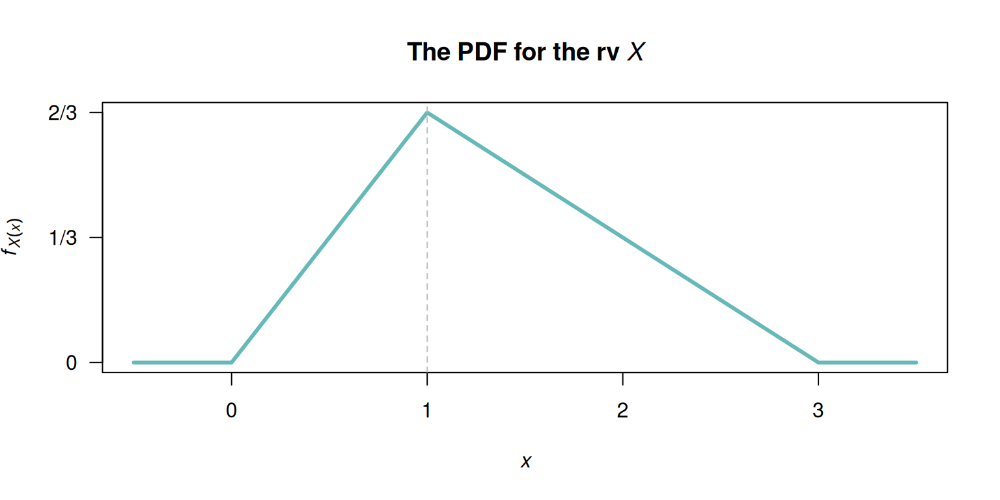
FIGURE 10.13: The probability density function for the random variable \(X\).
Exercise 10.21 Suppose the random variable \(X\) is defined as shown in Fig. 10.13.
- Determine the distribution function for \(X\) (this was done in Exercise 10.20).
- Find the probability density function for the random variable \(Z\), where \(Z = (X - 2)^2\).
- Confirm that your probability density function for \(Z\) is a valid pdf.
- Plot the probability density function of \(Z\).
Exercise 10.22 The time taken to run a distance \(D\) (in metres) by a professional athlete, say \(T\) (in seconds), varies with the distribution shown in Fig. 10.14 (left panel). The average velocity of the runner, say \(V\), is related to the time by \(V = D/T\).
- Determine the probability density function for the runner’s velocity.
- Suppose \(D = 100\), \(\mu = 12\) and \(\Delta = 0.25\). Plot the probability density function for \(V\).
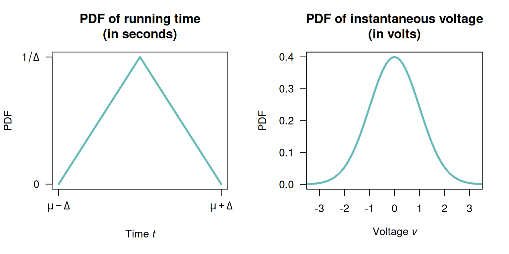
FIGURE 10.14: The probability density function for the random variable \(T\), the time for the run.
Exercise 10.23 Suppose the instantaneous voltage \(V\) (in volts) in a circuit varies over time such that \[ f_V(v) = \frac{1}{\sqrt{2\pi\sigma^2}}\exp\left\{ -\frac{x^2}{2\sigma^2}\right\}. \] as shown in Fig. 10.14 (right panel). (Later, we will identify this as the normal distribution.)
- Determine the probability density function of the instantaneous power in the circuit \(P\), where \(P = V^2/R\) for some circuit resistance \(R\) (in ohms).
- Suppose \(\sigma = 1\), and \(R = 10\). Plot the probability density function for \(P\).
Exercise 10.24 Let \(X_1, X_2, \ldots, X_n\) be independent positive random variables, and let \[ P = X_1 \cdot X_2 \cdots X_n = \prod_{i=1}^n X_i \] be their product.
- Show that \(\log P = \sum_{i=1}^n \log X_i\), where \(P = \prod_{i=1}^n X_i\).
- Hence show that \(P \sim \text{LogNormal}\!\left(\sum_{i=1}^n \mu_i,\, \sum_{i=1}^n \sigma_i^2\right)\).
- Suppose \(X_1, X_2, \ldots, X_{10}\) are independent with \()\log X_i \sim N(0.2, 0.09)\) for each \(i\). Find the distribution of \(P = \prod_{i=1}^{10} X_i\) and hence find \(\Pr(P > \exp 3)\).
Exercise 10.25 Suppose the random variable \(X\) has the PDF \[ f_X(x) = (x + 1)/2\quad\text{for $-1 < x < 1$}. \]
- Find the distribution function of \(X\).
- Find the distribution function of \(Y = |X|\).
- Hence find the probability density function of \(Y\).
- Plot the PDF of both \(X\) and \(Y\),
- Using the plot, explain why the PDF of \(Y\) Y has the shape it does, referring to the distribution of \(X\) and the transformation used.
Exercise 10.26 As in Example 10.19, consider the maximum of two independent continuous uniform distributions \(X_1\) and \(X_2\) defined on \([0, 1]\).
- Create an R simulation to show that the distribution of \(M = \max(X_1, X_2)\) is a \(\text{Beta}(2, 1)\) distribution. 2. Extend the simulation to show that the distribution of \(M = \max(X_1, \dots, X_n)\) is a \(\text{Beta}(n, 1)\) distribution for \(n = 3, 5\) and \(10\), for \(X_n \overset{\text{iid}}{\sim} \text{Uniform}(0, 1)\).